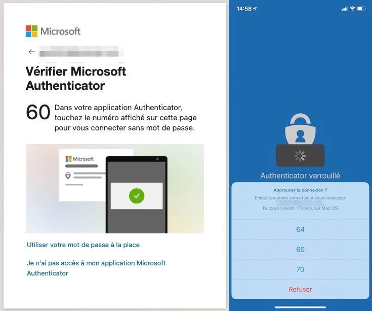
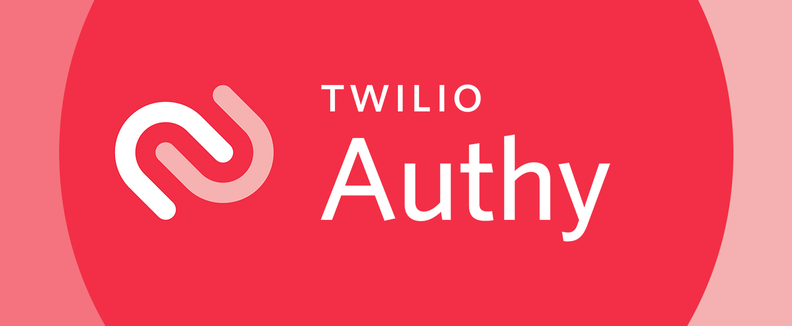

Le MFA : Pourquoi c'est l'étape n°1 de votre sécurité
Si vous pensez que votre entreprise est en sécurité parce que vos collaborateurs utilisent des mots de passe complexes, une mise à jour s'impose. Face à l'industrialisation des cyberattaques, le mot de passe ne suffit plus. Il vous faut un verrou supplémentaire : le MFA (Authentification Multifactorielle).
L'équivalent numérique de votre carte bancaire
Pour retirer de l'argent, vous avez besoin de deux choses : votre carte physique (quelque chose que vous possédez) et votre code PIN (quelque chose que vous connaissez). Pour vos accès professionnels, c'est la même logique. Le système vous demande :
- Un facteur de connaissance : Votre mot de passe.
- Un facteur de possession : Un code temporaire ou une validation via une application sur votre smartphone.
Même si un attaquant vole votre mot de passe via un e-mail frauduleux, il restera bloqué car il n'a pas votre téléphone entre les mains.
Quelles applications utiliser ?
L'erreur classique est d'utiliser la réception de codes par SMS (facilement interceptables). La méthode la plus sûre est d'utiliser une application d'authentification (TOTP).
Microsoft Authenticator

Le standard si votre entreprise utilise déjà Microsoft 365. Très confortable grâce à ses notifications "push" : vous recevez une pop-up vous demandant simplement "Approuver la connexion ?".
Site officielTwilio Authy

L'alternative redoutable. Son énorme avantage est la sauvegarde Cloud cryptée. Si vous perdez votre téléphone ou changez d'appareil, vous récupérez instantanément tous vos codes.
Site officielConclusion
La configuration initiale prend quelques minutes par utilisateur, mais elle réduit le risque d'intrusion de plus de 99%. Dans le cadre de la conformité RGPD, c'est d'ailleurs devenu une obligation technique implicite.
Vous ne savez pas si votre infrastructure est bien protégée par le MFA ?
L'activation du MFA pour l'ensemble d'une équipe nécessite une méthode pour éviter les blocages. Faisons le point sur votre situation actuelle.
Réserver mon audit de 10 min